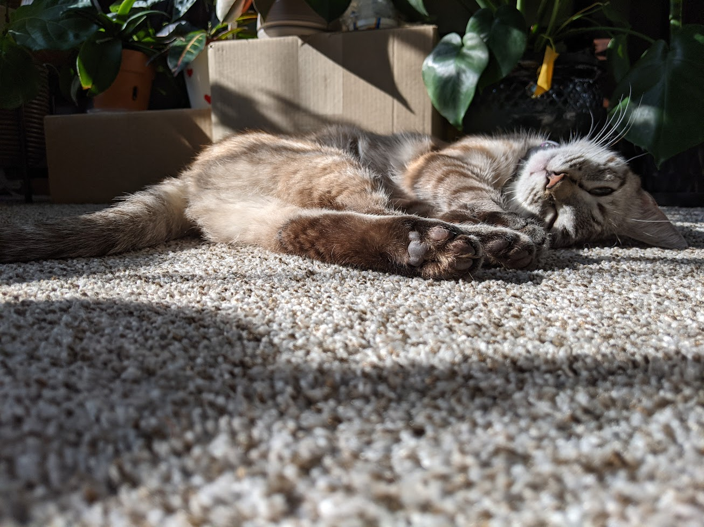

I am a pretty skilled mathematician, and have studied calculus all the way to the point of being able to solve systems of partial differential equations numerically. When I was younger, I was very passionate about numerical methods. I have also studied some discrete mathematics and modern physics.
Aside from this, I would say I am a pretty strong problem solver. I have studied many subfields of Chemical Engineering. These include the following:
Most of these fields require pretty strong physics and math backgrounds, which I would say I have, relative to many others.
Some problems even require writing code to solve more easily!
I really like gaming, and it is what I spend the majority of my time doing. I am very passionate about theory and strategy in games, I am defintely at the point where it is taking a very big toll on my life, and I should try to be healthier.
I have always had an interest in language, so much so that I have studied linguistics in college (this was difficult and probably not worth my time). I think it is very interesting to hear how people speak in their own native language. Many people hear people speaking out of their native language (and in the listener's native language) and percieve them as less intelligent. I have always believed that this judgement was extremely naive.
I have studied Mandarin and Spanish to the point where I can comprehend Mandarin and read and write Spanish to a somewhat reasonable level. More recently, I have tried learning Japanese, as I think the culture is very interesting. For me, this has been one of my most difficult recent goals.
I like cats. I think they're fun and funny. I somewhat recently got one because a stray kitten was at the door to my house and wanted to come inside.
My career goals are vague. One of issues historically is that the idea of a career has always been somewhat odd to me. One works their entire life just in order to just hopefully live comfortably one day, while still working.
Because of this, I hope that I will be able to find a career in I am passionate about (or is at least really easy) and have a job that pays the bills and lets me live like a person.